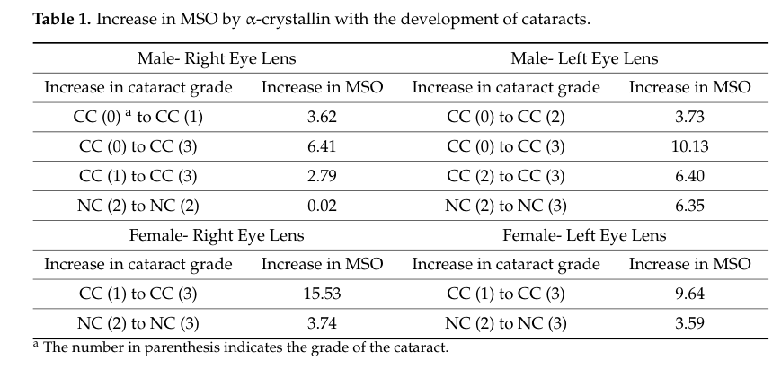

Bovine alpha-crystallin A chain (CRYAA/CRYA1) is a member of the small heat shock protein (sHSP/HSP20) family that serves dual roles as a major structural component of the ocular lens and as a molecular chaperone with holdase activity. CRYAA forms large oligomeric complexes and prevents aggregation of denatured proteins under stress conditions. Bovine alpha-crystallin recognizes non-native intermediates formed on the denaturation pathway, with no affinity for intermediates formed on the refolding pathway (PMID:7487869), establishing bovine CRYAA as a holdase that prevents aggregation but does not actively refold proteins. The protein hetero-oligomerizes with CRYAB (P02510) and contributes to lens transparency and refractive index. Crystal structures of truncated bovine CRYAA (PDB: 3L1E, 3L1F) revealed zinc-mediated inter-subunit bridging that enhances oligomer stability (PMID:20440841).
| GO Term | Evidence | Action | Reason |
|---|---|---|---|
|
GO:0043066
negative regulation of apoptotic process
|
IBA
GO_REF:0000033 |
KEEP AS NON CORE |
Summary: IBA annotation for negative regulation of apoptotic process. This is propagated from the human CRYAA ortholog (P02489) which has well-documented anti-apoptotic activity: human alphaA-crystallin binds pro-apoptotic Bax and Bcl-X(S), preventing their translocation to mitochondria (PMID:14752512 in human CRYAA review). The IBA is phylogenetically appropriate for sHSP family members. For bovine CRYAA specifically, this is a secondary function compared to the core structural and chaperone holdase roles.
Reason: Anti-apoptotic activity is well documented for the human ortholog and the IBA propagation is phylogenetically sound. However, this is a secondary function for CRYAA compared to its core structural and chaperone holdase roles.
|
|
GO:0005737
cytoplasm
|
IBA
GO_REF:0000033 |
ACCEPT |
Summary: IBA annotation for cytoplasm localization. Bovine CRYAA is a soluble cytoplasmic protein in lens fiber cells. UniProt confirms cytoplasm as a subcellular location. The IDA annotation from PMID:7487869 also confirms cytoplasmic localization. The IBA annotation is well supported and phylogenetically appropriate across sHSP family.
Reason: Cytoplasmic localization is the primary constitutive location of CRYAA, directly confirmed by IDA evidence from PMID:7487869 and consistent with UniProt annotation.
|
|
GO:0005634
nucleus
|
IBA
GO_REF:0000033 |
KEEP AS NON CORE |
Summary: IBA annotation for nucleus localization. UniProt states that CRYAA translocates to the nucleus during heat shock and resides in SC35 splicing speckles (by similarity with UniProtKB:P02489, human CRYAA). This is a stress-induced secondary localization rather than the primary constitutive location.
Reason: Nuclear localization is stress-induced (heat shock) rather than constitutive. UniProt documents this by similarity with the human ortholog. Keeping as non-core reflects the secondary nature of this localization.
|
|
GO:0009408
response to heat
|
IBA
GO_REF:0000033 |
ACCEPT |
Summary: IBA annotation for response to heat. CRYAA is a member of the sHSP family and bovine alpha-crystallin was directly shown to prevent thermal aggregation of proteins (PMID:7487869: "alpha-Crystallin, the major protein of the ocular lens, acts as a molecular chaperone by preventing the thermal aggregation of proteins"). The IBA is phylogenetically appropriate for sHSP family members.
Reason: Response to heat is a core function of sHSP family members. Bovine alpha-crystallin prevents thermal aggregation of proteins (PMID:7487869). The IBA is well justified.
Supporting Evidence:
PMID:7487869
alpha-Crystallin, the major protein of the ocular lens, acts as a molecular chaperone by preventing the thermal aggregation of proteins
|
|
GO:0051082
unfolded protein binding
|
IBA
GO_REF:0000033 |
MODIFY |
Summary: IBA annotation for unfolded protein binding. GO:0051082 is proposed for obsoletion (go-ontology#30962). Bovine CRYAA is a classic holdase chaperone that prevents aggregation of denatured proteins but does not refold them (PMID:7487869). Per UPB project rules, holdase proteins should retain GO:0051082 until a dedicated holdase NTR is created. The IBA annotation is phylogenetically sound and consistent with the IDA annotation from PMID:7487869.
Reason: GO:0051082 is being obsoleted. Bovine CRYAA is a holdase that prevents aggregation of denatured proteins (PMID:7487869) without refolding them (NOT annotation to GO:0042026). Per UPB project rules, the annotation should be retained until a holdase NTR is created. GO:0044183 is the best available interim replacement, though imperfect because CRYAA does not assist in protein folding per se.
Proposed replacements:
protein folding chaperone
Supporting Evidence:
PMID:7487869
alpha-Crystallin, the major protein of the ocular lens, acts as a molecular chaperone by preventing the thermal aggregation of proteins
file:BOVIN/CRYAA/CRYAA-deep-research-falcon.md
ATP-independent sHSP holdase chaperone that binds partially unfolded client proteins to suppress aggregation and maintain solubility; crucial for maintaining lens proteostasis and transparency.
|
|
GO:0002088
lens development in camera-type eye
|
IBA
GO_REF:0000033 |
ACCEPT |
Summary: IBA annotation for lens development in camera-type eye. CRYAA is the most abundantly expressed protein in the ocular lens. UniProt describes it as contributing to transparency and refractive index of the lens (PMID:20440841). The IBA annotation is phylogenetically appropriate for crystallin family members involved in lens development.
Reason: CRYAA is a core lens protein essential for normal lens development. UniProt documents its role in lens transparency and refractive index. Mutations in mammalian CRYAA consistently cause cataracts. The IBA is well justified.
|
|
GO:0005212
structural constituent of eye lens
|
IEA
GO_REF:0000120 |
ACCEPT |
Summary: IEA annotation for structural constituent of eye lens. This is one of the most appropriate terms for CRYAA. UniProt states it "Contributes to the transparency and refractive index of the lens" (PMID:20440841). The IEA mapping is accurate and captures a core function.
Reason: CRYAA is the defining structural constituent of the eye lens. This is a core function annotation. UniProt documents its contribution to lens transparency and refractive index.
|
|
GO:0005634
nucleus
|
IEA
GO_REF:0000120 |
KEEP AS NON CORE |
Summary: IEA annotation for nucleus based on ortholog mapping. Consistent with the IBA and ISS annotations for the same term. Nuclear localization is stress-induced (heat shock) rather than constitutive.
Reason: Consistent with IBA and ISS evidence. Nuclear localization is stress-dependent and secondary. Marked as non-core.
|
|
GO:0005737
cytoplasm
|
IEA
GO_REF:0000120 |
ACCEPT |
Summary: IEA annotation for cytoplasm from ortholog mapping. Consistent with IBA and IDA annotations for the same term.
Reason: Cytoplasm is the primary constitutive localization of CRYAA. Consistent with IBA and IDA (PMID:7487869) annotations.
|
|
GO:0046872
metal ion binding
|
IEA
GO_REF:0000043 |
MODIFY |
Summary: IEA annotation for metal ion binding from UniProt keyword mapping. UniProt documents that bovine CRYAA binds zinc ions via His-100, Glu-102, His-107, and His-154, with inter-subunit bridging via zinc enhancing oligomer stability (PMID:20440841). This is a generic term; GO:0008270 "zinc ion binding" would be more specific.
Reason: Metal ion binding is too generic. The specific metal is zinc, which is important for oligomer stability (PMID:20440841). GO:0008270 "zinc ion binding" would be more informative.
Proposed replacements:
zinc ion binding
|
|
GO:0005515
protein binding
|
IPI
PMID:19651604 The eye lens chaperone alpha-crystallin forms defined globul... |
MODIFY |
Summary: IPI annotation for protein binding from PMID:19651604. This study analyzed quaternary structures of alpha-crystallins and showed that alphaA-crystallin forms defined oligomers of 24 subunits as well as smaller oligomers and large clusters. The interaction partner listed is CRYAB (P02510), consistent with hetero-oligomerization. "Protein binding" is uninformative.
Reason: "Protein binding" is too vague. The interactions documented are homo- and hetero- oligomerization relevant to CRYAA structural and chaperone function. GO:0042802 "identical protein binding" captures the self-interaction, and the hetero-oligomerization with CRYAB is intrinsic to crystallin complex formation.
Proposed replacements:
identical protein binding
Supporting Evidence:
PMID:19651604
alphaA-Crystallin forms, in addition to complexes of 24 subunits, also smaller oligomers and large clusters consisting of individual oligomers
|
|
GO:0005198
structural molecule activity
|
IEA
GO_REF:0000107 |
MODIFY |
Summary: IEA annotation for structural molecule activity from Ensembl ortholog mapping. CRYAA is a major structural protein of the eye lens. While correct, the more specific child term GO:0005212 "structural constituent of eye lens" is already annotated and is more informative.
Reason: Structural molecule activity is correct but too broad. The more specific child term GO:0005212 "structural constituent of eye lens" is already annotated and better captures the actual function.
Proposed replacements:
structural constituent of eye lens
|
|
GO:0005654
nucleoplasm
|
IEA
GO_REF:0000107 |
KEEP AS NON CORE |
Summary: IEA annotation for nucleoplasm from Ensembl ortholog mapping. Consistent with the stress-induced nuclear translocation documented for the human ortholog. CRYAA translocates to SC35 speckles during heat shock (by similarity). This is a secondary, stress-dependent localization.
Reason: Nucleoplasm localization is stress-dependent (heat shock). Consistent with the nuclear localization annotations. Non-core secondary localization.
|
|
GO:0005829
cytosol
|
IEA
GO_REF:0000107 |
ACCEPT |
Summary: IEA annotation for cytosol from Ensembl ortholog mapping. CRYAA is a soluble cytoplasmic protein that exists free in the cytosol as oligomeric complexes. Consistent with the IDA evidence for cytoplasm (PMID:7487869).
Reason: Cytosol is the primary location of CRYAA where it exists as soluble oligomeric complexes. Consistent with IDA cytoplasm annotation.
|
|
GO:0007601
visual perception
|
IEA
GO_REF:0000107 |
MARK AS OVER ANNOTATED |
Summary: IEA annotation for visual perception from Ensembl ortholog mapping. CRYAA is essential for lens transparency, and mutations in orthologous genes cause cataracts that impair vision. However, CRYAA does not directly participate in the visual perception signaling pathway (phototransduction). It maintains lens structural integrity through which light passes.
Reason: CRYAA maintains lens transparency but does not participate in the visual perception signaling pathway. The connection to visual perception is indirect. GO:0002088 "lens development in camera-type eye" and GO:0005212 "structural constituent of eye lens" better capture the actual role. Consistent with the human CRYAA review assessment.
|
|
GO:0032387
negative regulation of intracellular transport
|
IEA
GO_REF:0000107 |
KEEP AS NON CORE |
Summary: IEA annotation for negative regulation of intracellular transport from Ensembl ortholog mapping. This is propagated from human CRYAA where it was demonstrated that alpha- crystallins prevent translocation of Bax and Bcl-X(S) from cytosol to mitochondria during apoptosis (PMID:14752512 in human CRYAA review). This is a secondary, non-core function tied to anti-apoptotic activity.
Reason: The annotation reflects anti-apoptotic activity (preventing mitochondrial translocation of Bax/Bcl-X(S)), which is a secondary function. Well supported by human ortholog data but not the core function of CRYAA.
|
|
GO:0032991
protein-containing complex
|
IEA
GO_REF:0000107 |
ACCEPT |
Summary: IEA annotation for protein-containing complex from Ensembl ortholog mapping. CRYAA forms large homo- and hetero-oligomeric complexes. UniProt documents heteromers of 3 CRYAA : 1 CRYAB subunits, homodimers, homotetramers, and larger homo-oligomers (PMID:20440841). Consistent with the crystal structure data and oligomerization studies.
Reason: CRYAA forms large oligomeric complexes as a core feature of its biology. The annotation is correct. Oligomeric complex formation is essential for both structural and chaperone functions (PMID:20440841, PMID:19651604).
|
|
GO:0042802
identical protein binding
|
IEA
GO_REF:0000107 |
ACCEPT |
Summary: IEA annotation for identical protein binding from Ensembl ortholog mapping. CRYAA homo-oligomerization is well established: UniProt documents homodimers and homotetramers as building blocks of larger homo-oligomers (PMID:20440841). The crystal structure shows zinc-mediated inter-subunit contacts.
Reason: CRYAA homo-oligomerization is a core property essential for both structural and chaperone functions. Well supported by crystallographic data (PMID:20440841) and biophysical studies (PMID:19651604).
|
|
GO:0043066
negative regulation of apoptotic process
|
IEA
GO_REF:0000107 |
KEEP AS NON CORE |
Summary: IEA annotation for negative regulation of apoptotic process from Ensembl ortholog mapping. Consistent with the IBA annotation for the same term. Anti-apoptotic activity is a secondary function of CRYAA.
Reason: Consistent with IBA annotation. Anti-apoptotic activity is a well-documented but secondary function compared to core structural and chaperone holdase roles.
|
|
GO:0050821
protein stabilization
|
IEA
GO_REF:0000107 |
ACCEPT |
Summary: IEA annotation for protein stabilization from Ensembl ortholog mapping. GO:0050821 is defined as "any process involved in maintaining the structure and integrity of a protein and preventing it from degradation or aggregation." This is an excellent fit for CRYAA holdase activity -- it prevents aggregation of denatured proteins. In the human CRYAA review, this was accepted as a core BP annotation.
Reason: GO:0050821 accurately describes the core holdase function of CRYAA: preventing aggregation and maintaining protein integrity. Bovine alpha-crystallin prevents thermal aggregation of proteins (PMID:7487869). This is one of the most appropriate BP terms for CRYAA holdase chaperone activity.
Supporting Evidence:
PMID:7487869
alpha-Crystallin, the major protein of the ocular lens, acts as a molecular chaperone by preventing the thermal aggregation of proteins
file:BOVIN/CRYAA/CRYAA-deep-research-falcon.md
alphaA-crystallin prevents aggregation/insolubilization of partially unfolded lens proteins, especially other crystallins, and helps maintain long-term protein solubility in the lens, where protein turnover is minimal.
|
|
GO:0051082
unfolded protein binding
|
IEA
GO_REF:0000107 |
MODIFY |
Summary: IEA annotation for unfolded protein binding from Ensembl ortholog mapping. GO:0051082 is proposed for obsoletion (go-ontology#30962). Consistent with the IBA and IDA annotations for the same term. Per UPB project rules, holdase proteins should retain GO:0051082 until a holdase NTR is created.
Reason: GO:0051082 is being obsoleted. Consistent with the IBA and IDA annotations. Per UPB project rules, the annotation should be retained until a holdase NTR is created.
Proposed replacements:
protein folding chaperone
|
|
GO:0005634
nucleus
|
ISS
GO_REF:0000024 |
KEEP AS NON CORE |
Summary: ISS annotation for nucleus from GO_REF:0000024, transferred from human CRYAA (P02489). The human ortholog translocates to SC35 splicing speckles during heat shock. This is a stress-induced secondary localization.
Reason: Consistent with IBA and IEA annotations for nuclear localization. Stress-induced secondary localization transferred from human ortholog.
|
|
GO:0005737
cytoplasm
|
IDA
PMID:7487869 On the substrate specificity of alpha-crystallin as a molecu... |
ACCEPT |
Summary: IDA annotation for cytoplasm from PMID:7487869. This study used purified bovine alpha-crystallin from lens extracts. Alpha-crystallin is a soluble cytoplasmic protein in lens fiber cells. The purification from cytoplasmic lens extracts confirms cytoplasmic localization.
Reason: Direct evidence from purification of alpha-crystallin from bovine lens cytoplasmic extracts (PMID:7487869). Cytoplasm is the primary constitutive location.
|
|
GO:0042026
protein refolding
|
IDA
NOT
PMID:7487869 On the substrate specificity of alpha-crystallin as a molecu... |
ACCEPT |
Summary: NOT annotation for protein refolding from PMID:7487869. This is a critical annotation that explicitly states bovine alpha-crystallin does NOT perform protein refolding. PMID:7487869 demonstrated that "alpha-crystallin has substrate specificity different from other chaperones and recognizes specific non-native intermediates formed on the denaturation pathway only, with no affinity for intermediates formed on the refolding pathway." This establishes that alpha-crystallin is a holdase, not a foldase: it binds proteins during denaturation to prevent aggregation but does not assist in refolding.
Reason: This NOT annotation is critical for understanding CRYAA as a holdase. PMID:7487869 directly demonstrated that alpha-crystallin has no affinity for refolding intermediates, only denaturation intermediates. This distinguishes holdase from foldase activity and is the key evidence for the holdase classification used in the UPB project.
Supporting Evidence:
PMID:7487869
alpha-crystallin has substrate specificity different from other chaperones and recognizes specific non-native intermediates formed on the denaturation pathway only, with no affinity for intermediates formed on the refolding pathway
|
|
GO:0051082
unfolded protein binding
|
IDA
PMID:7487869 On the substrate specificity of alpha-crystallin as a molecu... |
MODIFY |
Summary: IDA annotation for unfolded protein binding from PMID:7487869. GO:0051082 is proposed for obsoletion (go-ontology#30962). This study directly demonstrated that bovine alpha-crystallin binds to non-native intermediates formed during protein denaturation, preventing their aggregation. The key finding is that alpha-crystallin "recognizes specific non-native intermediates formed on the denaturation pathway only" -- this is holdase activity. Per UPB project rules, holdase proteins should retain GO:0051082 until a dedicated holdase NTR is created.
Reason: GO:0051082 is being obsoleted. The IDA evidence from PMID:7487869 clearly demonstrates holdase chaperone activity: bovine alpha-crystallin binds denaturation intermediates to prevent aggregation but does not refold proteins. GO:0044183 "protein folding chaperone" is the best available interim replacement, though imperfect because CRYAA specifically does NOT assist in protein folding. A holdase-specific NTR is needed. Per UPB project rules, retain GO:0051082 until holdase NTR is created.
Proposed replacements:
protein folding chaperone
Supporting Evidence:
PMID:7487869
alpha-crystallin has substrate specificity different from other chaperones and recognizes specific non-native intermediates formed on the denaturation pathway only, with no affinity for intermediates formed on the refolding pathway
PMID:7487869
alpha-Crystallin, the major protein of the ocular lens, acts as a molecular chaperone by preventing the thermal aggregation of proteins
file:BOVIN/CRYAA/CRYAA-deep-research-falcon.md
alpha-Crystallins are described as dynamic, high-order oligomeric sHSP "holdase" chaperones that bind/sequester misfolded or aggregation-prone client proteins to maintain protein solubility.
|
The research report should be a detailed narrative explaining the function, biological processes, and localization of the gene product. Citations should be given for all claims.
You should prioritize authoritative reviews and primary scientific literature when conducting research. You can supplement
this with annotations you find in gene/protein databases, but these can be outdated or inaccurate.
We are specifically interested in the primary function of the gene - for enzymes, what reaction is catalyzed, and what is the substrate specificity? For transporters, what is the substrate? For structural proteins or adapters, what is the broader structural role? For signaling molecules, what is the role in the pathway.
We are interested in where in or outside the cell the gene product carries out its function.
We are also interested in the signaling or biochemical pathways in which the gene functions. We are less interested in broad pleiotropic effects, except where these elucidate the precise role.
Include evidence where possible. We are interested in both experimental evidence as well as inference from structure, evolution, or bioinformatic analysis. Precise studies should be prioritized over high-throughput, where available.
The research target is CRYAA, encoding αA‑crystallin, a member of the small heat shock protein (sHSP/HSP20) family that functions as an ATP‑independent molecular chaperone (“holdase”) and a major lens protein required for transparency. This identity matches the CRYAA/αA‑crystallin discussed in the retrieved peer‑reviewed literature (patil2024proteostaticremodelingof pages 1-4, khidiyatova2023studyofthe pages 11-13).
Bovine linkage: A 2024 lens‑membrane biophysics study explicitly used native bovine lens α‑crystallin (Sigma product C4163) as the experimental α‑crystallin reagent (hazen2024associationofalphacrystallin pages 20-22). Most mechanistic/disease studies available here are in human, rodent, ground squirrel, zebrafish, and cell models; where non‑bovine evidence is used, conclusions are presented as conserved mammalian CRYAA biology rather than bovine‑specific physiology.
α‑Crystallins are described as dynamic, high‑order oligomeric sHSP “holdase” chaperones that bind/sequester misfolded or aggregation‑prone client proteins to maintain protein solubility (patil2024proteostaticremodelingof pages 1-4, khidiyatova2023studyofthe pages 11-13). In the lens, this chaperone role is central because lens proteins have extremely low/near‑negligible turnover, so long‑term proteostasis is required for lifelong transparency (patil2024proteostaticremodelingof pages 29-32).
Across authoritative sources in this evidence set, the primary function of CRYAA/αA‑crystallin is:
Lens localization (dominant): αA‑crystallin is emphasized as primarily expressed in the lens and functionally required for transparency; genetic loss of αA‑crystallin in mice causes cataract, supporting an essential role in lens homeostasis (patil2024proteostaticremodelingof pages 1-4, khidiyatova2023studyofthe pages 10-11).
Extralenticular context (lower abundance): Recent work also discusses that basal/low‑level αA‑crystallin can occur outside the lens and that regulatory mechanisms can “de‑repress” αA‑crystallin proteostasis in non‑lenticular tissues under specific genetic/stress contexts (patil2024proteostaticremodelingof pages 1-4).
αA‑crystallin forms large multimeric assemblies (including mixed αA/αB complexes) whose oligomeric state and dynamics are closely tied to substrate binding and chaperone function (ma2023expressionofαacrystallin pages 11-12, khidiyatova2023studyofthe pages 11-13).
A notable 2024 advance is the mechanistic link between CRYAA proteostasis and the UPS during stress recovery in a natural “cataract‑reversing” system. Yang et al. (Journal of Clinical Investigation; 2024‑09) report that ground squirrel lenses develop cold‑induced opacity that rapidly reverses on rewarming, and they implicate UPS activity in minimizing crystallin aggregation during recovery (yang2024reversiblecoldinducedlens pages 1-2, yang2024reversiblecoldinducedlens pages 2-3). Key mechanistic evidence includes:
This work connects CRYAA function not only to classic “holdase” chaperoning but also to regulated turnover of aggregation‑prone CRYAA species via ubiquitin‑dependent proteasomal pathways under stress‑recovery conditions (yang2024reversiblecoldinducedlens pages 2-3).
Hazen et al. (International Journal of Molecular Sciences; 2024‑02) examined α‑crystallin association with human lens cortical and nuclear membranes. They report that membrane surface occupancy (MSO) by α‑crystallin increases with increasing cortical and nuclear cataract grade, accompanied by increased membrane surface hydrophobicity and altered mobility/order (hazen2024associationofalphacrystallin pages 1-2, hazen2024associationofalphacrystallin pages 3-5). Mechanistically, they relate increased binding to cataract‑associated lipid remodeling, particularly reduced cholesterol and smaller/fewer cholesterol bilayer domains, which can permit greater α‑crystallin association (hazen2024associationofalphacrystallin pages 3-5, hazen2024associationofalphacrystallin pages 2-3).
A key bovine‑relevance point is that Hazen et al. used native bovine α‑crystallin (no engineered mutations) as the α‑crystallin protein reagent (hazen2024associationofalphacrystallin pages 20-22). Thus, while membranes were from human lenses, the observed binding behavior pertains to a bovine α‑crystallin preparation interacting with physiologically derived lens membranes.
Ma et al. (Aging (Albany NY); 2023‑05) studied age‑related cataract models (oxidative stress in HLEB3 lens epithelial cells and naphthalene‑induced cataract in rabbit lens) and report that cataract modeling reduces CRYAA expression, and that CRYAA silencing increases apoptosis and autophagy in lens epithelial cells (ma2023expressionofαacrystallin pages 11-12, ma2023expressionofαacrystallin pages 9-11). These findings support a protective role for CRYAA in lens epithelial homeostasis under stress.
A 2023 congenital cataract cohort study summarizes the established role of CRYAA in inherited cataract and provides a snapshot statistic: 26 distinct pathogenic CRYAA variants were recorded as of 20 Feb 2023, with a predominance of missense variants, often affecting arginine residues and commonly associated with autosomal dominant nuclear/zonular cataracts (khidiyatova2023studyofthe pages 11-13). The same study reports additional likely pathogenic variants (e.g., p.L85F, p.H97Q) (khidiyatova2023studyofthe pages 11-13).
Yang et al. identify RNF114 (an E3 ubiquitin ligase) as a UPS‑linked factor in this lens proteostasis context and report a practical intervention: they engineered a deliverable RNF114 complex that reduced lens opacity in rats with cold‑induced cataracts and in zebrafish with oxidative stress–related cataracts (yang2024reversiblecoldinducedlens pages 1-2). This constitutes a concrete real‑world oriented implementation of CRYAA‑centered proteostasis insight.
Quantitative/translational context from the same study includes: ground squirrel lens opacity cleared after ~5 minutes at 37°C, while rat lenses recovered only to ~86% transmittance after rewarming, highlighting a measurable phenotype and improvement target (yang2024reversiblecoldinducedlens pages 2-3).
Hazen et al. argue that lipid composition—especially cholesterol—strongly modulates α‑crystallin membrane association and propose that increasing membrane cholesterol or using cholesterol derivatives could reduce α‑crystallin binding/hydrophobic barrier effects, offering a mechanistically grounded intervention direction (hazen2024associationofalphacrystallin pages 19-20).
Although not bovine, a 2024 zebrafish transgenic line uses the cryaa promoter to drive lens‑specific Cre expression without impairing lens transparency, representing a practical implementation of cryaa regulatory specificity for lens research (rossen2025zebrafishasa pages 4-5).
A consistent expert framing in these sources is that αA‑crystallin’s biological role is not merely structural abundance but active proteostasis maintenance in a tissue where proteins persist for long periods. This is evidenced by its characterization as an oligomeric sHSP chaperone that prevents aggregation and maintains solubility, and by the cataract phenotypes associated with disruption (patil2024proteostaticremodelingof pages 29-32, patil2024proteostaticremodelingof pages 1-4).
The 2023–2024 evidence suggests three converging mechanistic axes in which CRYAA is central:
A major 2024 advance adds a fourth axis:
Hazen et al. report grade‑associated increases in α‑crystallin membrane binding, including examples of MSO increases (Table/Figures): male right‑eye cortex CC0→CC3 +6.41%, male left‑eye cortex CC0→CC3 +10.13%, female right‑eye cortex CC1→CC3 +15.53% (hazen2024associationofalphacrystallin pages 3-5). In absolute terms, they report NM MSO values ~13% at NC grade 2 and ~17% at NC grade 3, and cortical MSO reaching ~28% in females at CC grade 3 (vs ~18% in males) (hazen2024associationofalphacrystallin pages 5-7).
Visual evidence is available in the extracted Table 1 and Figures 1–2 (hazen2024associationofalphacrystallin media 2accb877, hazen2024associationofalphacrystallin media 2dba8fc4, hazen2024associationofalphacrystallin media 0ae1363c).
Yang et al. quantify key aspects of their model: ground squirrel lens opacity clears after ~5 minutes at 37°C; rat lenses recover only to ~86% transmittance after rewarming (yang2024reversiblecoldinducedlens pages 2-3). In their induced lens epithelial cell system, differentiation produced >95% CRYAA‑positive cells by day 13, supporting robustness of the CRYAA‑expressing cell model used for mechanistic tests (yang2024reversiblecoldinducedlens pages 1-2).
As of 20 Feb 2023, 26 pathogenic CRYAA variants were recorded (khidiyatova2023studyofthe pages 11-13). This statistic supports the view of CRYAA as a well‑validated cataract gene with an expanding variant catalog.
ATP‑independent sHSP holdase chaperone that binds partially unfolded client proteins to suppress aggregation and maintain solubility; crucial for maintaining lens proteostasis and transparency (patil2024proteostaticremodelingof pages 1-4, khidiyatova2023studyofthe pages 11-13).
| Topic | Evidence-based details | Key recent sources (year) | Notes on species (bovine vs other) |
|---|---|---|---|
| Identity / definition | CRYAA encodes the αA subunit of α-crystallin, a member of the small heat shock protein family (often designated HSPB4). It is described as a dynamic ATP-independent “holdase” chaperone central to lens proteostasis and transparency (patil2024proteostaticremodelingof pages 1-4, khidiyatova2023studyofthe pages 11-13). | Patil et al. 2024; Khidiyatova et al. 2023 | Functional identity is conserved across mammals; direct evidence gathered is mainly human/mouse/general vertebrate, not bovine-sequence specific. |
| Core molecular function | αA-crystallin prevents aggregation/insolubilization of partially unfolded lens proteins, especially other crystallins, and helps maintain long-term protein solubility in the lens, where protein turnover is minimal (patil2024proteostaticremodelingof pages 29-32, patil2024proteostaticremodelingof pages 1-4, khidiyatova2023studyofthe pages 11-13). | Patil et al. 2024; Khidiyatova et al. 2023 | Mechanistic evidence is largely from mammalian systems broadly; applicable to bovine CRYAA by strong family conservation. |
| Anti-stress / cell-protective role | Beyond chaperoning, CRYAA is linked to protection from oxidative stress, anti-apoptotic activity, regulation of autophagy-associated responses, and cell survival in lens epithelial cells (patil2024proteostaticremodelingof pages 29-32, ma2023expressionofαacrystallin pages 12-12, ma2023expressionofαacrystallin pages 9-11). | Ma et al. 2023; Patil et al. 2024 | Evidence comes from human HLEB3 cells, rabbit lens, and mouse-linked literature rather than bovine tissue. |
| Lens localization | CRYAA is primarily expressed in the lens and is critical for lens transparency; mouse loss of αA-crystallin causes cataract, supporting lens-essential function (patil2024proteostaticremodelingof pages 1-4, khidiyatova2023studyofthe pages 10-11). | Patil et al. 2024; Khidiyatova et al. 2023 | Strong lens-specific evidence is cross-species; direct bovine localization data were not retrieved. |
| Extralenticular expression | Basal/low-level αA-crystallin expression can occur in non-lenticular tissues, and recent work links altered CRYAA proteostasis to chorioretinal settings and broader stress responses (patil2024proteostaticremodelingof pages 29-32, patil2024proteostaticremodelingof pages 1-4). | Patil et al. 2024 | Non-lens evidence is mostly from mouse or non-bovine systems. |
| Oligomerization / structural behavior | αA-crystallin functions in large multimeric assemblies, often with αB-crystallin; the α-crystallin complex is emphasized as dynamic, with oligomeric state influencing chaperone activity and substrate handling (ma2023expressionofαacrystallin pages 11-12, khidiyatova2023studyofthe pages 11-13). | Ma et al. 2023; Khidiyatova et al. 2023 | General mammalian α-crystallin biology; not a bovine-specific oligomerization study. |
| Membrane association | α-crystallin increasingly associates with cortical and nuclear lens membranes as cataract grade rises. Binding decreases membrane mobility, increases order and hydrophobicity, and is proposed to hinder diffusion of protective small molecules such as glutathione (hazen2024associationofalphacrystallin pages 1-2, hazen2024associationofalphacrystallin pages 3-5, hazen2024associationofalphacrystallin pages 15-16, hazen2024associationofalphacrystallin pages 19-20, hazen2024associationofalphacrystallin media 2accb877). | Hazen et al. 2024 | Important bovine-specific point: the experimental protein reagent was native bovine lens α-crystallin, while membranes were from human donor lenses (hazen2024associationofalphacrystallin pages 20-22). |
| Quantitative membrane data | In human lens membrane assays using bovine α-crystallin, membrane surface occupancy (MSO) increased with cataract severity: examples include male right-eye cortex CC0→CC3 +6.41%, male left-eye cortex CC0→CC3 +10.13%, female right-eye cortex CC1→CC3 +15.53%; NM values were ~13% at NC2 and ~17% at NC3, and female CC3 cortical membranes reached ~28% MSO versus ~18% in males (hazen2024associationofalphacrystallin pages 3-5, hazen2024associationofalphacrystallin pages 5-7, hazen2024associationofalphacrystallin media 2accb877). | Hazen et al. 2024 | Uses native bovine α-crystallin reagent with human membranes; informative for bovine protein behavior but not bovine in vivo lens physiology. |
| Lipid-dependent mechanism | Increased membrane binding is linked to cataract-associated lipid remodeling, especially reduced cholesterol and fewer/smaller cholesterol bilayer domains; added cholesterol is noted to inhibit α-crystallin binding in prior work (hazen2024associationofalphacrystallin pages 3-5, hazen2024associationofalphacrystallin pages 19-20, hazen2024associationofalphacrystallin pages 2-3). | Hazen et al. 2024 | Human lens membrane composition was measured; mechanistic implications likely relevant to bovine α-crystallin biophysics. |
| Proteostasis pathway / UPS | A major 2024 advance is the finding that CRYAA homeostasis during cold-stress recovery is regulated by the ubiquitin-proteasome system (UPS). CRYAA interacts with ubiquitin, becomes more polyubiquitinated after rewarming, and aggregate clearance is blocked by proteasome inhibition but not by autophagy/lysosome inhibitors (yang2024reversiblecoldinducedlens pages 1-2, yang2024reversiblecoldinducedlens pages 2-3). | Yang et al. 2024 | Derived from ground squirrel, rat, zebrafish, human LEC, and induced lens epithelial cell systems; not bovine-specific. |
| Translational application | Yang et al. identified RNF114 as an E3 ligase connected to CRYAA proteostasis and engineered a deliverable RNF114 complex that reduced lens opacity in rat cold-cataract and zebrafish oxidative cataract models, highlighting a potential anti-cataract therapeutic strategy (yang2024reversiblecoldinducedlens pages 1-2, yang2024reversiblecoldinducedlens pages 2-3). | Yang et al. 2024 | Translational work is not bovine, but it targets a conserved CRYAA proteostasis axis. |
| Cell-model quantitative data | In the ground-squirrel iLEC model used to study CRYAA proteostasis, differentiation yielded >95% CRYAA-positive cells by day 13. In intact lenses, ground-squirrel opacity cleared after ~5 minutes at 37°C, while rat lenses recovered only to ~86% transmittance after rewarming (yang2024reversiblecoldinducedlens pages 1-2, yang2024reversiblecoldinducedlens pages 2-3). | Yang et al. 2024 | Non-bovine experimental models. |
| Cataract-related expression changes | In age-related cataract models, CRYAA expression decreases in oxidatively stressed HLEB3 cells and naphthalene-induced rabbit lenses; CRYAA silencing increases apoptosis and autophagy-related changes, supporting a protective role in lens epithelial homeostasis (ma2023expressionofαacrystallin pages 11-12, ma2023expressionofαacrystallin pages 12-12, ma2023expressionofαacrystallin pages 9-11). | Ma et al. 2023 | Human cell line plus rabbit in vivo model; not bovine. |
| Disease genetics | CRYAA is a well-established cataract gene. As summarized in 2023 evidence, 26 distinct pathogenic CRYAA variants had been recorded by 20 Feb 2023, mostly missense and often affecting arginine residues; phenotypes commonly include dominant nuclear or zonular cataracts, sometimes with microcornea/microphthalmia (khidiyatova2023studyofthe pages 11-13). | Khidiyatova et al. 2023 | Human genetics evidence; useful for functional inference, not bovine disease annotation. |
| Recent human variant findings | Recent studies reported new or emphasized pathogenic/likely pathogenic variants including p.L85F and p.H97Q in congenital cataract cohorts, and mechanistic work on variants such as E156K and Y118D implicates altered chaperone function, ER stress, EMT/migration effects, or aggregation-prone behavior (khidiyatova2023studyofthe pages 10-11, ma2023expressionofαacrystallin pages 12-12, khidiyatova2023studyofthe pages 11-13). | Khidiyatova et al. 2023; Zhao et al. 2024; Yang et al. 2024 | Mostly human variant data and model systems. |
| Research utility / implementation | CRYAA promoter activity is now being used as a lens-specific genetic tool; a 2024 zebrafish cryaa:Cre-cryaa:EGFP line enabled lens-specific Cre expression without impairing transparency, providing a practical platform for lens gene manipulation (rossen2025zebrafishasa pages 4-5). | Peng et al. 2024 | Zebrafish tool development, not bovine. |
| Overall annotation for bovine CRYAA | For Bos taurus UniProt P02470, the most evidence-supported annotation is: major lens α-crystallin small heat shock protein/chaperone that stabilizes other lens proteins, limits aggregation, contributes to transparency, can associate with lens membranes under cataract-associated conditions, and participates in broader proteostasis/stress-response mechanisms. Direct bovine primary literature retrieved here is limited, so much of the functional annotation is inferred from conserved mammalian CRYAA biology plus one 2024 study explicitly using native bovine α-crystallin experimentally (patil2024proteostaticremodelingof pages 1-4, khidiyatova2023studyofthe pages 11-13, hazen2024associationofalphacrystallin pages 20-22). | Patil et al. 2024; Khidiyatova et al. 2023; Hazen et al. 2024 | Bovine-specific evidence is limited; annotation is strongest for conserved lens chaperone function. |
Table: This table condenses the evidence-supported functions, localization, mechanisms, disease links, and recent 2023-2024 developments for CRYAA/alphaA-crystallin. It also distinguishes where evidence is directly relevant to bovine protein versus inferred from other species.
References
(patil2024proteostaticremodelingof pages 1-4): Hemangi Patil, Haiqing Yi, Kyoung-in Cho, and Paulo A. Ferreira. Proteostatic remodeling of small heat shock chaperones─crystallins by ran-binding protein 2─and the peptidyl-prolyl cis-trans isomerase and chaperone activities of its cyclophilin domain. ACS chemical neuroscience, 15:1967-1989, Apr 2024. URL: https://doi.org/10.1021/acschemneuro.3c00792, doi:10.1021/acschemneuro.3c00792. This article has 2 citations and is from a peer-reviewed journal.
(khidiyatova2023studyofthe pages 11-13): Irina Khidiyatova, Indira Khidiyatova, Rena Zinchenko, Andrey Marakhonov, Alexandra Karunas, Svetlana Avkhadeeva, Marat Aznzbaev, and Elza Khusnutdinova. Study of the molecular nature of congenital cataracts in patients from the volga–ural region. Jun 2023. URL: https://doi.org/10.3390/cimb45060327, doi:10.3390/cimb45060327. This article has 2 citations.
(hazen2024associationofalphacrystallin pages 20-22): Preston Hazen, Geraline Trossi-Torres, Raju Timsina, Nawal K. Khadka, and Laxman Mainali. Association of alpha-crystallin with human cortical and nuclear lens lipid membrane increases with the grade of cortical and nuclear cataract. International Journal of Molecular Sciences, 25:1936, Feb 2024. URL: https://doi.org/10.3390/ijms25031936, doi:10.3390/ijms25031936. This article has 9 citations.
(patil2024proteostaticremodelingof pages 29-32): Hemangi Patil, Haiqing Yi, Kyoung-in Cho, and Paulo A. Ferreira. Proteostatic remodeling of small heat shock chaperones─crystallins by ran-binding protein 2─and the peptidyl-prolyl cis-trans isomerase and chaperone activities of its cyclophilin domain. ACS chemical neuroscience, 15:1967-1989, Apr 2024. URL: https://doi.org/10.1021/acschemneuro.3c00792, doi:10.1021/acschemneuro.3c00792. This article has 2 citations and is from a peer-reviewed journal.
(khidiyatova2023studyofthe pages 10-11): Irina Khidiyatova, Indira Khidiyatova, Rena Zinchenko, Andrey Marakhonov, Alexandra Karunas, Svetlana Avkhadeeva, Marat Aznzbaev, and Elza Khusnutdinova. Study of the molecular nature of congenital cataracts in patients from the volga–ural region. Jun 2023. URL: https://doi.org/10.3390/cimb45060327, doi:10.3390/cimb45060327. This article has 2 citations.
(ma2023expressionofαacrystallin pages 11-12): Xiaoling Ma, Yi Nan, Can Huang, Xiangyang Li, Yifan Yang, Wenjie Jiang, Mengyi Ye, Qian Liu, Yang Niu, and Ling Yuan. Expression of αa-crystallin (cryaa) in vivo and in vitro models of age-related cataract and the effect of its silencing on hleb3 cells. Aging (Albany NY), 15:4498-4509, May 2023. URL: https://doi.org/10.18632/aging.204754, doi:10.18632/aging.204754. This article has 9 citations.
(yang2024reversiblecoldinducedlens pages 1-2): Hao Yang, Xiyuan Ping, Jiayue Zhou, Hailaiti Ailifeire, Jing Wu, Francisco M. Nadal-Nicolás, Kiyoharu J. Miyagishima, Jing Bao, Yuxin Huang, Yilei Cui, Xin Xing, Shiqiang Wang, Ke Yao, Wei Li, and Xingchao Shentu. Reversible cold-induced lens opacity in a hibernator reveals a molecular target for treating cataracts. The Journal of Clinical Investigation, Sep 2024. URL: https://doi.org/10.1172/jci169666, doi:10.1172/jci169666. This article has 15 citations.
(yang2024reversiblecoldinducedlens pages 2-3): Hao Yang, Xiyuan Ping, Jiayue Zhou, Hailaiti Ailifeire, Jing Wu, Francisco M. Nadal-Nicolás, Kiyoharu J. Miyagishima, Jing Bao, Yuxin Huang, Yilei Cui, Xin Xing, Shiqiang Wang, Ke Yao, Wei Li, and Xingchao Shentu. Reversible cold-induced lens opacity in a hibernator reveals a molecular target for treating cataracts. The Journal of Clinical Investigation, Sep 2024. URL: https://doi.org/10.1172/jci169666, doi:10.1172/jci169666. This article has 15 citations.
(hazen2024associationofalphacrystallin pages 1-2): Preston Hazen, Geraline Trossi-Torres, Raju Timsina, Nawal K. Khadka, and Laxman Mainali. Association of alpha-crystallin with human cortical and nuclear lens lipid membrane increases with the grade of cortical and nuclear cataract. International Journal of Molecular Sciences, 25:1936, Feb 2024. URL: https://doi.org/10.3390/ijms25031936, doi:10.3390/ijms25031936. This article has 9 citations.
(hazen2024associationofalphacrystallin pages 3-5): Preston Hazen, Geraline Trossi-Torres, Raju Timsina, Nawal K. Khadka, and Laxman Mainali. Association of alpha-crystallin with human cortical and nuclear lens lipid membrane increases with the grade of cortical and nuclear cataract. International Journal of Molecular Sciences, 25:1936, Feb 2024. URL: https://doi.org/10.3390/ijms25031936, doi:10.3390/ijms25031936. This article has 9 citations.
(hazen2024associationofalphacrystallin pages 2-3): Preston Hazen, Geraline Trossi-Torres, Raju Timsina, Nawal K. Khadka, and Laxman Mainali. Association of alpha-crystallin with human cortical and nuclear lens lipid membrane increases with the grade of cortical and nuclear cataract. International Journal of Molecular Sciences, 25:1936, Feb 2024. URL: https://doi.org/10.3390/ijms25031936, doi:10.3390/ijms25031936. This article has 9 citations.
(ma2023expressionofαacrystallin pages 9-11): Xiaoling Ma, Yi Nan, Can Huang, Xiangyang Li, Yifan Yang, Wenjie Jiang, Mengyi Ye, Qian Liu, Yang Niu, and Ling Yuan. Expression of αa-crystallin (cryaa) in vivo and in vitro models of age-related cataract and the effect of its silencing on hleb3 cells. Aging (Albany NY), 15:4498-4509, May 2023. URL: https://doi.org/10.18632/aging.204754, doi:10.18632/aging.204754. This article has 9 citations.
(hazen2024associationofalphacrystallin pages 19-20): Preston Hazen, Geraline Trossi-Torres, Raju Timsina, Nawal K. Khadka, and Laxman Mainali. Association of alpha-crystallin with human cortical and nuclear lens lipid membrane increases with the grade of cortical and nuclear cataract. International Journal of Molecular Sciences, 25:1936, Feb 2024. URL: https://doi.org/10.3390/ijms25031936, doi:10.3390/ijms25031936. This article has 9 citations.
(rossen2025zebrafishasa pages 4-5): Jennifer L. Rossen, Antionette L. Williams, and Brenda L. Bohnsack. Zebrafish as a model for crystallin-associated congenital cataracts in humans. Frontiers in Cell and Developmental Biology, Mar 2025. URL: https://doi.org/10.3389/fcell.2025.1552988, doi:10.3389/fcell.2025.1552988. This article has 5 citations.
(hazen2024associationofalphacrystallin pages 13-15): Preston Hazen, Geraline Trossi-Torres, Raju Timsina, Nawal K. Khadka, and Laxman Mainali. Association of alpha-crystallin with human cortical and nuclear lens lipid membrane increases with the grade of cortical and nuclear cataract. International Journal of Molecular Sciences, 25:1936, Feb 2024. URL: https://doi.org/10.3390/ijms25031936, doi:10.3390/ijms25031936. This article has 9 citations.
(hazen2024associationofalphacrystallin pages 5-7): Preston Hazen, Geraline Trossi-Torres, Raju Timsina, Nawal K. Khadka, and Laxman Mainali. Association of alpha-crystallin with human cortical and nuclear lens lipid membrane increases with the grade of cortical and nuclear cataract. International Journal of Molecular Sciences, 25:1936, Feb 2024. URL: https://doi.org/10.3390/ijms25031936, doi:10.3390/ijms25031936. This article has 9 citations.
(hazen2024associationofalphacrystallin media 2accb877): Preston Hazen, Geraline Trossi-Torres, Raju Timsina, Nawal K. Khadka, and Laxman Mainali. Association of alpha-crystallin with human cortical and nuclear lens lipid membrane increases with the grade of cortical and nuclear cataract. International Journal of Molecular Sciences, 25:1936, Feb 2024. URL: https://doi.org/10.3390/ijms25031936, doi:10.3390/ijms25031936. This article has 9 citations.
(hazen2024associationofalphacrystallin media 2dba8fc4): Preston Hazen, Geraline Trossi-Torres, Raju Timsina, Nawal K. Khadka, and Laxman Mainali. Association of alpha-crystallin with human cortical and nuclear lens lipid membrane increases with the grade of cortical and nuclear cataract. International Journal of Molecular Sciences, 25:1936, Feb 2024. URL: https://doi.org/10.3390/ijms25031936, doi:10.3390/ijms25031936. This article has 9 citations.
(hazen2024associationofalphacrystallin media 0ae1363c): Preston Hazen, Geraline Trossi-Torres, Raju Timsina, Nawal K. Khadka, and Laxman Mainali. Association of alpha-crystallin with human cortical and nuclear lens lipid membrane increases with the grade of cortical and nuclear cataract. International Journal of Molecular Sciences, 25:1936, Feb 2024. URL: https://doi.org/10.3390/ijms25031936, doi:10.3390/ijms25031936. This article has 9 citations.
(ma2023expressionofαacrystallin pages 12-12): Xiaoling Ma, Yi Nan, Can Huang, Xiangyang Li, Yifan Yang, Wenjie Jiang, Mengyi Ye, Qian Liu, Yang Niu, and Ling Yuan. Expression of αa-crystallin (cryaa) in vivo and in vitro models of age-related cataract and the effect of its silencing on hleb3 cells. Aging (Albany NY), 15:4498-4509, May 2023. URL: https://doi.org/10.18632/aging.204754, doi:10.18632/aging.204754. This article has 9 citations.
(hazen2024associationofalphacrystallin pages 15-16): Preston Hazen, Geraline Trossi-Torres, Raju Timsina, Nawal K. Khadka, and Laxman Mainali. Association of alpha-crystallin with human cortical and nuclear lens lipid membrane increases with the grade of cortical and nuclear cataract. International Journal of Molecular Sciences, 25:1936, Feb 2024. URL: https://doi.org/10.3390/ijms25031936, doi:10.3390/ijms25031936. This article has 9 citations.

The YAML description field was revised to keep it as a standalone biological summary. Project-specific curation framing moved here instead.
id: P02470
gene_symbol: CRYAA
product_type: PROTEIN
status: IN_PROGRESS
taxon:
id: NCBITaxon:9913
label: Bos taurus
description: >-
Bovine alpha-crystallin A chain (CRYAA/CRYA1) is a member of the small heat shock protein
(sHSP/HSP20) family that serves dual roles as a major structural component of the ocular lens and as
a molecular chaperone with holdase activity. CRYAA forms large oligomeric complexes and prevents
aggregation of denatured proteins under stress conditions. Bovine alpha-crystallin recognizes
non-native intermediates formed on the denaturation pathway, with no affinity for intermediates
formed on the refolding pathway (PMID:7487869), establishing bovine CRYAA as a holdase that prevents
aggregation but does not actively refold proteins. The protein hetero-oligomerizes with CRYAB
(P02510) and contributes to lens transparency and refractive index. Crystal structures of truncated
bovine CRYAA (PDB: 3L1E, 3L1F) revealed zinc-mediated inter-subunit bridging that enhances oligomer
stability (PMID:20440841).
existing_annotations:
- term:
id: GO:0043066
label: negative regulation of apoptotic process
evidence_type: IBA
original_reference_id: GO_REF:0000033
review:
summary: >-
IBA annotation for negative regulation of apoptotic process. This is propagated from
the human CRYAA ortholog (P02489) which has well-documented anti-apoptotic activity:
human alphaA-crystallin binds pro-apoptotic Bax and Bcl-X(S), preventing their
translocation to mitochondria (PMID:14752512 in human CRYAA review). The IBA is
phylogenetically appropriate for sHSP family members. For bovine CRYAA specifically,
this is a secondary function compared to the core structural and chaperone holdase
roles.
action: KEEP_AS_NON_CORE
reason: >-
Anti-apoptotic activity is well documented for the human ortholog and the IBA
propagation is phylogenetically sound. However, this is a secondary function for
CRYAA compared to its core structural and chaperone holdase roles.
- term:
id: GO:0005737
label: cytoplasm
evidence_type: IBA
original_reference_id: GO_REF:0000033
review:
summary: >-
IBA annotation for cytoplasm localization. Bovine CRYAA is a soluble cytoplasmic
protein in lens fiber cells. UniProt confirms cytoplasm as a subcellular location.
The IDA annotation from PMID:7487869 also confirms cytoplasmic localization. The
IBA annotation is well supported and phylogenetically appropriate across sHSP family.
action: ACCEPT
reason: >-
Cytoplasmic localization is the primary constitutive location of CRYAA, directly
confirmed by IDA evidence from PMID:7487869 and consistent with UniProt annotation.
- term:
id: GO:0005634
label: nucleus
evidence_type: IBA
original_reference_id: GO_REF:0000033
review:
summary: >-
IBA annotation for nucleus localization. UniProt states that CRYAA translocates to
the nucleus during heat shock and resides in SC35 splicing speckles (by similarity
with UniProtKB:P02489, human CRYAA). This is a stress-induced secondary localization
rather than the primary constitutive location.
action: KEEP_AS_NON_CORE
reason: >-
Nuclear localization is stress-induced (heat shock) rather than constitutive. UniProt
documents this by similarity with the human ortholog. Keeping as non-core reflects
the secondary nature of this localization.
- term:
id: GO:0009408
label: response to heat
evidence_type: IBA
original_reference_id: GO_REF:0000033
review:
summary: >-
IBA annotation for response to heat. CRYAA is a member of the sHSP family and bovine
alpha-crystallin was directly shown to prevent thermal aggregation of proteins
(PMID:7487869: "alpha-Crystallin, the major protein of the ocular lens, acts as a
molecular chaperone by preventing the thermal aggregation of proteins"). The IBA is
phylogenetically appropriate for sHSP family members.
action: ACCEPT
reason: >-
Response to heat is a core function of sHSP family members. Bovine alpha-crystallin
prevents thermal aggregation of proteins (PMID:7487869). The IBA is well justified.
supported_by:
- reference_id: PMID:7487869
supporting_text: >-
alpha-Crystallin, the major protein of the ocular lens, acts as a molecular chaperone
by preventing the thermal aggregation of proteins
- term:
id: GO:0051082
label: unfolded protein binding
evidence_type: IBA
original_reference_id: GO_REF:0000033
review:
summary: >-
IBA annotation for unfolded protein binding. GO:0051082 is proposed for obsoletion
(go-ontology#30962). Bovine CRYAA is a classic holdase chaperone that prevents
aggregation of denatured proteins but does not refold them (PMID:7487869). Per UPB
project rules, holdase proteins should retain GO:0051082 until a dedicated holdase
NTR is created. The IBA annotation is phylogenetically sound and consistent with the
IDA annotation from PMID:7487869.
action: MODIFY
reason: >-
GO:0051082 is being obsoleted. Bovine CRYAA is a holdase that prevents aggregation
of denatured proteins (PMID:7487869) without refolding them (NOT annotation to
GO:0042026). Per UPB project rules, the annotation should be retained until a holdase
NTR is created. GO:0044183 is the best available interim replacement, though imperfect
because CRYAA does not assist in protein folding per se.
proposed_replacement_terms:
- id: GO:0044183
label: protein folding chaperone
additional_reference_ids:
- file:BOVIN/CRYAA/CRYAA-deep-research-falcon.md
supported_by:
- reference_id: PMID:7487869
supporting_text: >-
alpha-Crystallin, the major protein of the ocular lens, acts as a molecular chaperone
by preventing the thermal aggregation of proteins
- reference_id: file:BOVIN/CRYAA/CRYAA-deep-research-falcon.md
supporting_text: >-
ATP-independent sHSP holdase chaperone that binds partially unfolded client
proteins to suppress aggregation and maintain solubility; crucial for
maintaining lens proteostasis and transparency.
- term:
id: GO:0002088
label: lens development in camera-type eye
evidence_type: IBA
original_reference_id: GO_REF:0000033
review:
summary: >-
IBA annotation for lens development in camera-type eye. CRYAA is the most abundantly
expressed protein in the ocular lens. UniProt describes it as contributing to
transparency and refractive index of the lens (PMID:20440841). The IBA annotation is
phylogenetically appropriate for crystallin family members involved in lens development.
action: ACCEPT
reason: >-
CRYAA is a core lens protein essential for normal lens development. UniProt documents
its role in lens transparency and refractive index. Mutations in mammalian CRYAA
consistently cause cataracts. The IBA is well justified.
- term:
id: GO:0005212
label: structural constituent of eye lens
evidence_type: IEA
original_reference_id: GO_REF:0000120
review:
summary: >-
IEA annotation for structural constituent of eye lens. This is one of the most
appropriate terms for CRYAA. UniProt states it "Contributes to the transparency and
refractive index of the lens" (PMID:20440841). The IEA mapping is accurate and
captures a core function.
action: ACCEPT
reason: >-
CRYAA is the defining structural constituent of the eye lens. This is a core function
annotation. UniProt documents its contribution to lens transparency and refractive
index.
- term:
id: GO:0005634
label: nucleus
evidence_type: IEA
original_reference_id: GO_REF:0000120
review:
summary: >-
IEA annotation for nucleus based on ortholog mapping. Consistent with the IBA and ISS
annotations for the same term. Nuclear localization is stress-induced (heat shock)
rather than constitutive.
action: KEEP_AS_NON_CORE
reason: >-
Consistent with IBA and ISS evidence. Nuclear localization is stress-dependent and
secondary. Marked as non-core.
- term:
id: GO:0005737
label: cytoplasm
evidence_type: IEA
original_reference_id: GO_REF:0000120
review:
summary: >-
IEA annotation for cytoplasm from ortholog mapping. Consistent with IBA and IDA
annotations for the same term.
action: ACCEPT
reason: >-
Cytoplasm is the primary constitutive localization of CRYAA. Consistent with IBA
and IDA (PMID:7487869) annotations.
- term:
id: GO:0046872
label: metal ion binding
evidence_type: IEA
original_reference_id: GO_REF:0000043
review:
summary: >-
IEA annotation for metal ion binding from UniProt keyword mapping. UniProt documents
that bovine CRYAA binds zinc ions via His-100, Glu-102, His-107, and His-154, with
inter-subunit bridging via zinc enhancing oligomer stability (PMID:20440841). This
is a generic term; GO:0008270 "zinc ion binding" would be more specific.
action: MODIFY
reason: >-
Metal ion binding is too generic. The specific metal is zinc, which is important for
oligomer stability (PMID:20440841). GO:0008270 "zinc ion binding" would be more
informative.
proposed_replacement_terms:
- id: GO:0008270
label: zinc ion binding
- term:
id: GO:0005515
label: protein binding
evidence_type: IPI
original_reference_id: PMID:19651604
review:
summary: >-
IPI annotation for protein binding from PMID:19651604. This study analyzed quaternary
structures of alpha-crystallins and showed that alphaA-crystallin forms defined
oligomers of 24 subunits as well as smaller oligomers and large clusters. The
interaction partner listed is CRYAB (P02510), consistent with hetero-oligomerization.
"Protein binding" is uninformative.
action: MODIFY
reason: >-
"Protein binding" is too vague. The interactions documented are homo- and hetero-
oligomerization relevant to CRYAA structural and chaperone function. GO:0042802
"identical protein binding" captures the self-interaction, and the hetero-oligomerization
with CRYAB is intrinsic to crystallin complex formation.
proposed_replacement_terms:
- id: GO:0042802
label: identical protein binding
supported_by:
- reference_id: PMID:19651604
supporting_text: >-
alphaA-Crystallin forms, in addition to complexes of 24 subunits, also smaller
oligomers and large clusters consisting of individual oligomers
- term:
id: GO:0005198
label: structural molecule activity
evidence_type: IEA
original_reference_id: GO_REF:0000107
review:
summary: >-
IEA annotation for structural molecule activity from Ensembl ortholog mapping. CRYAA
is a major structural protein of the eye lens. While correct, the more specific child
term GO:0005212 "structural constituent of eye lens" is already annotated and is more
informative.
action: MODIFY
reason: >-
Structural molecule activity is correct but too broad. The more specific child term
GO:0005212 "structural constituent of eye lens" is already annotated and better
captures the actual function.
proposed_replacement_terms:
- id: GO:0005212
label: structural constituent of eye lens
- term:
id: GO:0005654
label: nucleoplasm
evidence_type: IEA
original_reference_id: GO_REF:0000107
review:
summary: >-
IEA annotation for nucleoplasm from Ensembl ortholog mapping. Consistent with the
stress-induced nuclear translocation documented for the human ortholog. CRYAA
translocates to SC35 speckles during heat shock (by similarity). This is a secondary,
stress-dependent localization.
action: KEEP_AS_NON_CORE
reason: >-
Nucleoplasm localization is stress-dependent (heat shock). Consistent with the
nuclear localization annotations. Non-core secondary localization.
- term:
id: GO:0005829
label: cytosol
evidence_type: IEA
original_reference_id: GO_REF:0000107
review:
summary: >-
IEA annotation for cytosol from Ensembl ortholog mapping. CRYAA is a soluble
cytoplasmic protein that exists free in the cytosol as oligomeric complexes. Consistent
with the IDA evidence for cytoplasm (PMID:7487869).
action: ACCEPT
reason: >-
Cytosol is the primary location of CRYAA where it exists as soluble oligomeric
complexes. Consistent with IDA cytoplasm annotation.
- term:
id: GO:0007601
label: visual perception
evidence_type: IEA
original_reference_id: GO_REF:0000107
review:
summary: >-
IEA annotation for visual perception from Ensembl ortholog mapping. CRYAA is essential
for lens transparency, and mutations in orthologous genes cause cataracts that impair
vision. However, CRYAA does not directly participate in the visual perception signaling
pathway (phototransduction). It maintains lens structural integrity through which
light passes.
action: MARK_AS_OVER_ANNOTATED
reason: >-
CRYAA maintains lens transparency but does not participate in the visual perception
signaling pathway. The connection to visual perception is indirect. GO:0002088 "lens
development in camera-type eye" and GO:0005212 "structural constituent of eye lens"
better capture the actual role. Consistent with the human CRYAA review assessment.
- term:
id: GO:0032387
label: negative regulation of intracellular transport
evidence_type: IEA
original_reference_id: GO_REF:0000107
review:
summary: >-
IEA annotation for negative regulation of intracellular transport from Ensembl ortholog
mapping. This is propagated from human CRYAA where it was demonstrated that alpha-
crystallins prevent translocation of Bax and Bcl-X(S) from cytosol to mitochondria
during apoptosis (PMID:14752512 in human CRYAA review). This is a secondary, non-core
function tied to anti-apoptotic activity.
action: KEEP_AS_NON_CORE
reason: >-
The annotation reflects anti-apoptotic activity (preventing mitochondrial translocation
of Bax/Bcl-X(S)), which is a secondary function. Well supported by human ortholog
data but not the core function of CRYAA.
- term:
id: GO:0032991
label: protein-containing complex
evidence_type: IEA
original_reference_id: GO_REF:0000107
review:
summary: >-
IEA annotation for protein-containing complex from Ensembl ortholog mapping. CRYAA
forms large homo- and hetero-oligomeric complexes. UniProt documents heteromers of
3 CRYAA : 1 CRYAB subunits, homodimers, homotetramers, and larger homo-oligomers
(PMID:20440841). Consistent with the crystal structure data and oligomerization studies.
action: ACCEPT
reason: >-
CRYAA forms large oligomeric complexes as a core feature of its biology. The
annotation is correct. Oligomeric complex formation is essential for both structural
and chaperone functions (PMID:20440841, PMID:19651604).
- term:
id: GO:0042802
label: identical protein binding
evidence_type: IEA
original_reference_id: GO_REF:0000107
review:
summary: >-
IEA annotation for identical protein binding from Ensembl ortholog mapping. CRYAA
homo-oligomerization is well established: UniProt documents homodimers and homotetramers
as building blocks of larger homo-oligomers (PMID:20440841). The crystal structure
shows zinc-mediated inter-subunit contacts.
action: ACCEPT
reason: >-
CRYAA homo-oligomerization is a core property essential for both structural and
chaperone functions. Well supported by crystallographic data (PMID:20440841) and
biophysical studies (PMID:19651604).
- term:
id: GO:0043066
label: negative regulation of apoptotic process
evidence_type: IEA
original_reference_id: GO_REF:0000107
review:
summary: >-
IEA annotation for negative regulation of apoptotic process from Ensembl ortholog
mapping. Consistent with the IBA annotation for the same term. Anti-apoptotic activity
is a secondary function of CRYAA.
action: KEEP_AS_NON_CORE
reason: >-
Consistent with IBA annotation. Anti-apoptotic activity is a well-documented but
secondary function compared to core structural and chaperone holdase roles.
- term:
id: GO:0050821
label: protein stabilization
evidence_type: IEA
original_reference_id: GO_REF:0000107
review:
summary: >-
IEA annotation for protein stabilization from Ensembl ortholog mapping. GO:0050821
is defined as "any process involved in maintaining the structure and integrity of a
protein and preventing it from degradation or aggregation." This is an excellent fit
for CRYAA holdase activity -- it prevents aggregation of denatured proteins. In the
human CRYAA review, this was accepted as a core BP annotation.
action: ACCEPT
reason: >-
GO:0050821 accurately describes the core holdase function of CRYAA: preventing
aggregation and maintaining protein integrity. Bovine alpha-crystallin prevents thermal
aggregation of proteins (PMID:7487869). This is one of the most appropriate BP terms
for CRYAA holdase chaperone activity.
additional_reference_ids:
- file:BOVIN/CRYAA/CRYAA-deep-research-falcon.md
supported_by:
- reference_id: PMID:7487869
supporting_text: >-
alpha-Crystallin, the major protein of the ocular lens, acts as a molecular chaperone
by preventing the thermal aggregation of proteins
- reference_id: file:BOVIN/CRYAA/CRYAA-deep-research-falcon.md
supporting_text: >-
alphaA-crystallin prevents aggregation/insolubilization of partially unfolded
lens proteins, especially other crystallins, and helps maintain long-term
protein solubility in the lens, where protein turnover is minimal.
- term:
id: GO:0051082
label: unfolded protein binding
evidence_type: IEA
original_reference_id: GO_REF:0000107
review:
summary: >-
IEA annotation for unfolded protein binding from Ensembl ortholog mapping. GO:0051082
is proposed for obsoletion (go-ontology#30962). Consistent with the IBA and IDA
annotations for the same term. Per UPB project rules, holdase proteins should retain
GO:0051082 until a holdase NTR is created.
action: MODIFY
reason: >-
GO:0051082 is being obsoleted. Consistent with the IBA and IDA annotations. Per UPB
project rules, the annotation should be retained until a holdase NTR is created.
proposed_replacement_terms:
- id: GO:0044183
label: protein folding chaperone
- term:
id: GO:0005634
label: nucleus
evidence_type: ISS
original_reference_id: GO_REF:0000024
review:
summary: >-
ISS annotation for nucleus from GO_REF:0000024, transferred from human CRYAA
(P02489). The human ortholog translocates to SC35 splicing speckles during heat shock.
This is a stress-induced secondary localization.
action: KEEP_AS_NON_CORE
reason: >-
Consistent with IBA and IEA annotations for nuclear localization. Stress-induced
secondary localization transferred from human ortholog.
- term:
id: GO:0005737
label: cytoplasm
evidence_type: IDA
original_reference_id: PMID:7487869
review:
summary: >-
IDA annotation for cytoplasm from PMID:7487869. This study used purified bovine
alpha-crystallin from lens extracts. Alpha-crystallin is a soluble cytoplasmic protein
in lens fiber cells. The purification from cytoplasmic lens extracts confirms
cytoplasmic localization.
action: ACCEPT
reason: >-
Direct evidence from purification of alpha-crystallin from bovine lens cytoplasmic
extracts (PMID:7487869). Cytoplasm is the primary constitutive location.
- term:
id: GO:0042026
label: protein refolding
evidence_type: IDA
original_reference_id: PMID:7487869
negated: true
review:
summary: >-
NOT annotation for protein refolding from PMID:7487869. This is a critical annotation
that explicitly states bovine alpha-crystallin does NOT perform protein refolding.
PMID:7487869 demonstrated that "alpha-crystallin has substrate specificity different
from other chaperones and recognizes specific non-native intermediates formed on the
denaturation pathway only, with no affinity for intermediates formed on the refolding
pathway." This establishes that alpha-crystallin is a holdase, not a foldase: it binds
proteins during denaturation to prevent aggregation but does not assist in refolding.
action: ACCEPT
reason: >-
This NOT annotation is critical for understanding CRYAA as a holdase. PMID:7487869
directly demonstrated that alpha-crystallin has no affinity for refolding intermediates,
only denaturation intermediates. This distinguishes holdase from foldase activity and
is the key evidence for the holdase classification used in the UPB project.
supported_by:
- reference_id: PMID:7487869
supporting_text: >-
alpha-crystallin has substrate specificity different from other chaperones and
recognizes specific non-native intermediates formed on the denaturation pathway only,
with no affinity for intermediates formed on the refolding pathway
- term:
id: GO:0051082
label: unfolded protein binding
evidence_type: IDA
original_reference_id: PMID:7487869
review:
summary: >-
IDA annotation for unfolded protein binding from PMID:7487869. GO:0051082 is proposed
for obsoletion (go-ontology#30962). This study directly demonstrated that bovine
alpha-crystallin binds to non-native intermediates formed during protein denaturation,
preventing their aggregation. The key finding is that alpha-crystallin "recognizes
specific non-native intermediates formed on the denaturation pathway only" -- this is
holdase activity. Per UPB project rules, holdase proteins should retain GO:0051082
until a dedicated holdase NTR is created.
action: MODIFY
reason: >-
GO:0051082 is being obsoleted. The IDA evidence from PMID:7487869 clearly demonstrates
holdase chaperone activity: bovine alpha-crystallin binds denaturation intermediates
to prevent aggregation but does not refold proteins. GO:0044183 "protein folding
chaperone" is the best available interim replacement, though imperfect because CRYAA
specifically does NOT assist in protein folding. A holdase-specific NTR is needed.
Per UPB project rules, retain GO:0051082 until holdase NTR is created.
proposed_replacement_terms:
- id: GO:0044183
label: protein folding chaperone
additional_reference_ids:
- file:BOVIN/CRYAA/CRYAA-deep-research-falcon.md
supported_by:
- reference_id: PMID:7487869
supporting_text: >-
alpha-crystallin has substrate specificity different from other chaperones and
recognizes specific non-native intermediates formed on the denaturation pathway only,
with no affinity for intermediates formed on the refolding pathway
- reference_id: PMID:7487869
supporting_text: >-
alpha-Crystallin, the major protein of the ocular lens, acts as a molecular chaperone
by preventing the thermal aggregation of proteins
- reference_id: file:BOVIN/CRYAA/CRYAA-deep-research-falcon.md
supporting_text: >-
alpha-Crystallins are described as dynamic, high-order oligomeric sHSP
"holdase" chaperones that bind/sequester misfolded or aggregation-prone
client proteins to maintain protein solubility.
core_functions:
- molecular_function:
id: GO:0044183
label: protein folding chaperone
description: >-
Bovine CRYAA is a small heat shock protein that functions as an ATP-independent holdase
chaperone. It prevents thermal aggregation of proteins by binding to non-native
intermediates formed on the denaturation pathway, but has no affinity for intermediates
on the refolding pathway (PMID:7487869). This is holdase, not foldase, activity.
A holdase-specific NTR is needed; GO:0044183 is an interim annotation.
directly_involved_in:
- id: GO:0050821
label: protein stabilization
- id: GO:0009408
label: response to heat
locations:
- id: GO:0005829
label: cytosol
supported_by:
- reference_id: PMID:7487869
supporting_text: >-
alpha-Crystallin, the major protein of the ocular lens, acts as a molecular chaperone
by preventing the thermal aggregation of proteins
- reference_id: PMID:7487869
supporting_text: >-
alpha-crystallin has substrate specificity different from other chaperones and
recognizes specific non-native intermediates formed on the denaturation pathway only,
with no affinity for intermediates formed on the refolding pathway
- molecular_function:
id: GO:0005212
label: structural constituent of eye lens
description: >-
Bovine CRYAA is the most abundant soluble protein in the eye lens, contributing to
transparency and refractive index. It forms heteromeric complexes with CRYAB (3:1 ratio),
with zinc-mediated inter-subunit bridging enhancing stability (PMID:20440841). The
structural role is essential as there is no protein turnover in the lens.
directly_involved_in:
- id: GO:0002088
label: lens development in camera-type eye
locations:
- id: GO:0005829
label: cytosol
supported_by:
- reference_id: PMID:19651604
supporting_text: >-
alphaA-Crystallin forms, in addition to complexes of 24 subunits, also smaller
oligomers and large clusters consisting of individual oligomers
references:
- id: GO_REF:0000024
title: Manual transfer of experimentally-verified manual GO annotation data to orthologs
by curator judgment of sequence similarity
findings: []
- id: GO_REF:0000033
title: Annotation inferences using phylogenetic trees
findings: []
- id: GO_REF:0000043
title: Gene Ontology annotation based on UniProtKB/Swiss-Prot keyword mapping
findings: []
- id: GO_REF:0000107
title: Automatic transfer of experimentally verified manual GO annotation data to
orthologs using Ensembl Compara
findings: []
- id: GO_REF:0000120
title: Combined Automated Annotation using Multiple IEA Methods
findings: []
- id: PMID:19651604
title: The eye lens chaperone alpha-crystallin forms defined globular assemblies.
findings: []
- id: PMID:20440841
title: Crystal structures of truncated alphaA and alphaB crystallins reveal structural
mechanisms of polydispersity important for eye lens function.
findings: []
- id: PMID:7487869
title: On the substrate specificity of alpha-crystallin as a molecular chaperone.
findings: []
- id: file:BOVIN/CRYAA/CRYAA-deep-research-falcon.md
title: Deep research report on CRYAA (Falcon/Edison Scientific Literature)
findings:
- statement: Alpha-A crystallin (CRYAA) is the bovine ortholog of the lens-resident small heat shock protein that prevents UV/heat/oxidative aggregation of lens proteins via ATP-independent unfolded protein binding; the major structural and chaperone protein of the vertebrate lens.
{kind=link}